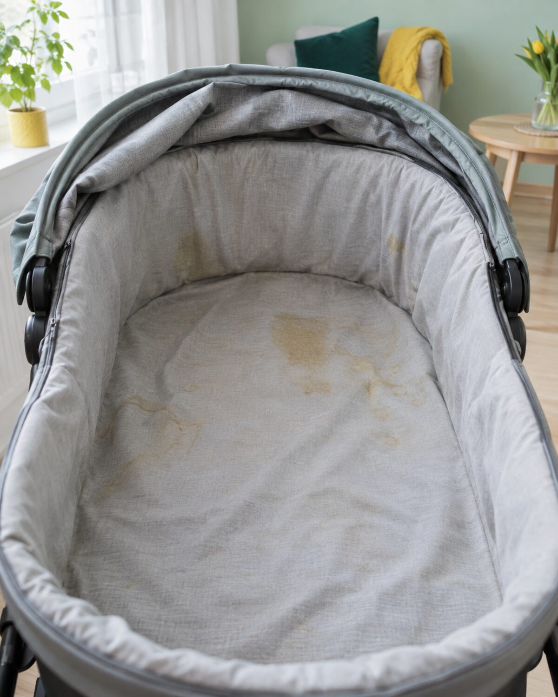
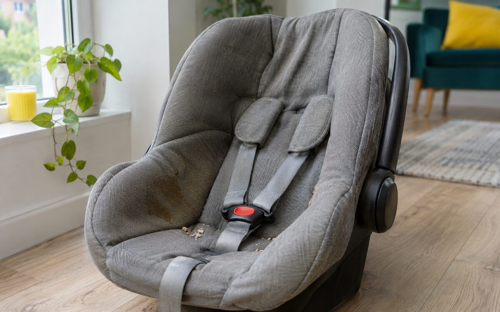
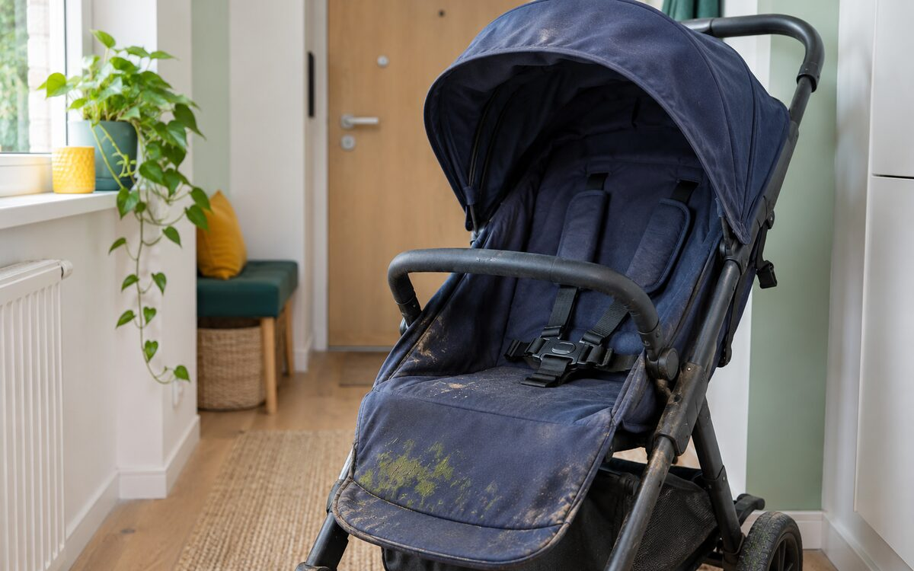
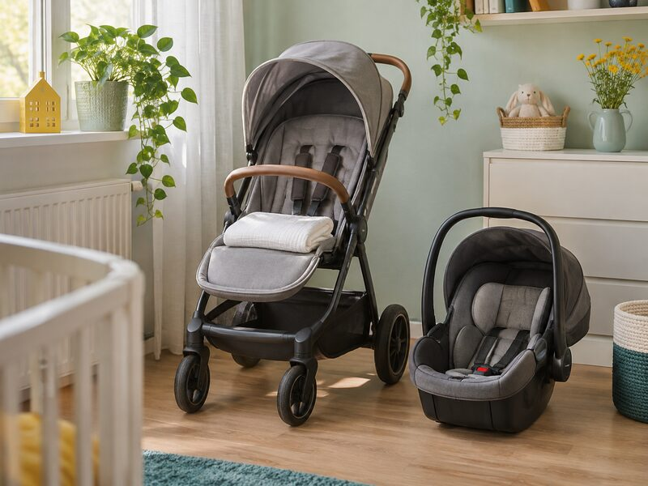
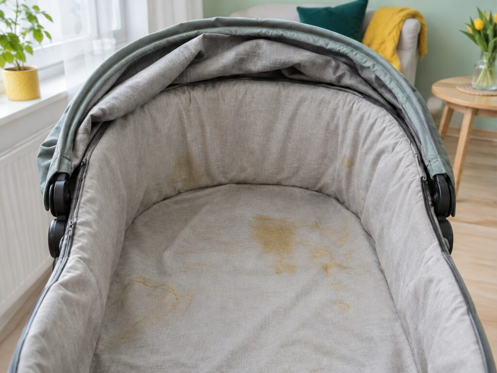
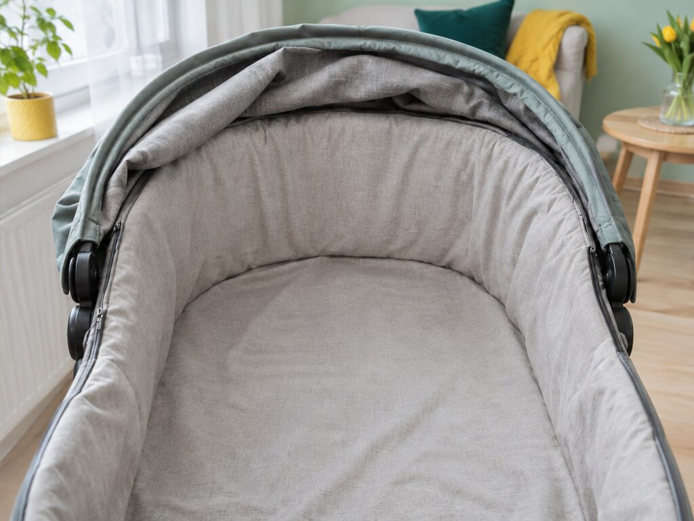
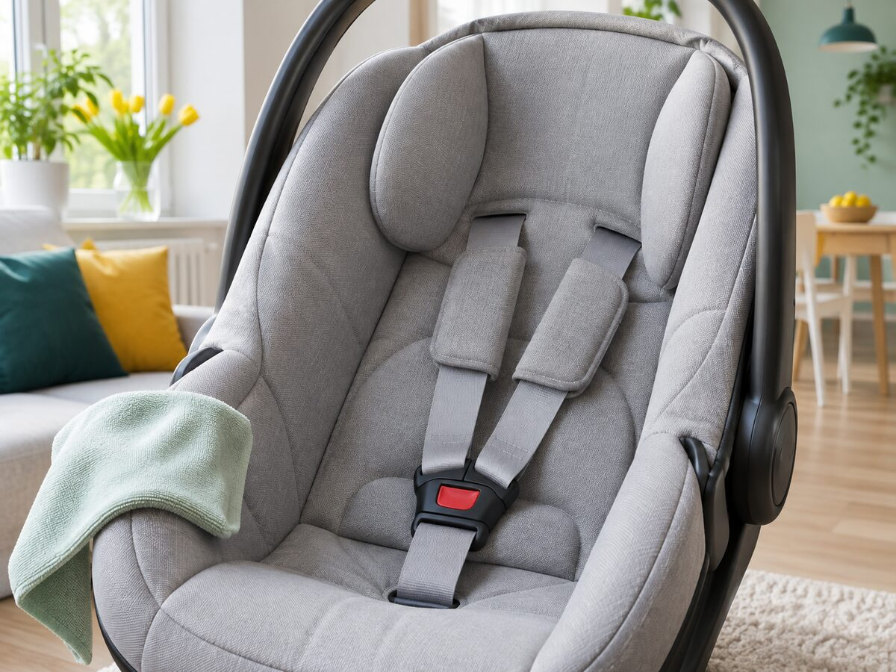

Problem
Gondola żółta od oliwki
Co robimy. Czyścimy podszewkę hipoalergicznym środkiem i odsysamy wodę, więc nic nie moczy się w pralce.
Wózek jak nowe. Pod Twoim domem, tego samego dnia.
Przyjeżdżamy z własnym sprzętem. Ty nie wyjmujesz dziecka z domu, nie wozisz wózka i nie czekasz trzech dni.
Najbliższy wolny termin: jutro, 10:00
Wyślij zdjęcia na WhatsApp2–3 zdjęcia wystarczą. Cenę podamy dziś.
Odpisujemy pn–pt 9:00–17:00, sob 9:00–14:00
Pralka i szczotka zostawiają zacieki na podszewce, a moczenie osłabia pasy. Dlatego robimy to inaczej.

Co robimy. Czyścimy podszewkę hipoalergicznym środkiem i odsysamy wodę, więc nic nie moczy się w pralce.

Co robimy. Pokrowiec i skorupa według instrukcji producenta. Pasy tylko powierzchniowo.

Co robimy. Siedzisko, budka i szwy. Stelaż i koła są w cenie.

Co robimy. Cały zestaw po starszym rodzeństwie, gotowy na nowy początek.
Pakiet Nowy Członek Rodziny od 319 złCeny brutto, z dojazdem w Strefie 1. Dokładną kwotę podajemy ze zdjęć, zanim przyjedziemy.
Minimalne zamówienie 150 zł. Przy silnych zabrudzeniach (pleśń, wymioty) wycenimy ze zdjęć przed przyjazdem.
2–3 zdjęcia przez WhatsApp lub SMS. Napisz, gdzie mieszkasz.
Zwykle w kilka minut. Wolne terminy często już na następny dzień.
Przywozimy sprzęt i środki. Potrzebujemy tylko wody i gniazdka.

Przed
Po
Wózek spacerowy od 90 zł, 2w1 od 120 zł, 3w1 od 160 zł, bliźniaczy od 150 zł. Dokładną cenę podajemy ze zdjęć, zanim przyjedziemy.
Od 80 zł. W pakietach jest taniej.
Według instrukcji producenta: pokrowiec zgodnie z metką, skorupa i klamra łagodnym środkiem, pasy tylko powierzchniowo, bez moczenia.
Tak. Używamy środków hipoalergicznych i dokładnie je odsysamy. Po wyschnięciu tapicerka jest bezpieczna dla dziecka.
Zwykle tego samego dnia. Rano pierzemy, schnięcie trwa 3–5 godzin w ciepłym, przewietrzonym mieszkaniu.
Często tak, ale stare przebarwienia po pleśni mogą nie zejść w całości. Ocenimy to uczciwie ze zdjęć, zanim przyjedziemy.
Tak, stelaż, koła i kosz są w cenie każdego wózka.
Poznań i okolice, tam gdzie mieszkają rodziny. W Strefie 1 dojazd jest gratis.
Poznań, Suchy Las, Swarzędz, Luboń, Komorniki, Plewiska, Skórzewo, Tarnowo Podgórne, Rokietnica, Czerwonak
Kórnik, Mosina, Puszczykowo, Dopiewo, Murowana Goślina, Pobiedziska, Buk, Stęszew, Kleszczewo
Poza powiatem poznańskim wycenimy dojazd indywidualnie.
Przyjeżdżamy na czas. Płacisz tyle, ile podaliśmy ze zdjęć. Jeśli coś wyjdzie po wyschnięciu, wracamy za darmo.
Odpisujemy pn–pt 9:00–17:00, sob 9:00–14:00
Nie masz WhatsAppa? Wyślij zdjęcia SMS-em na ten sam numer.